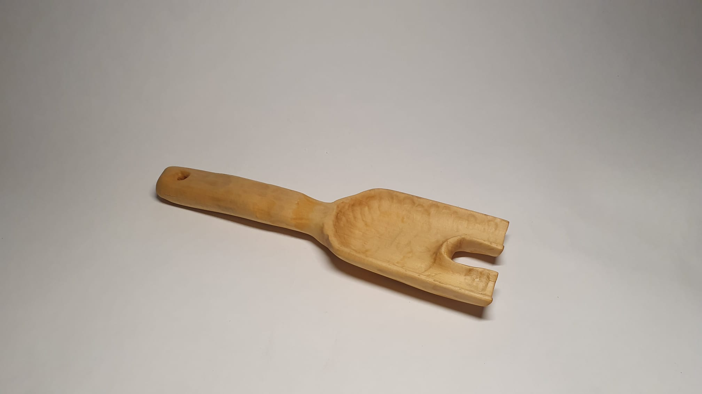
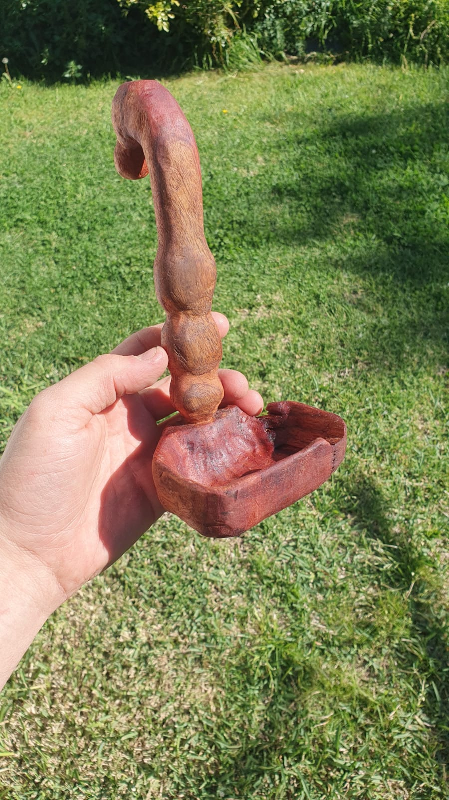
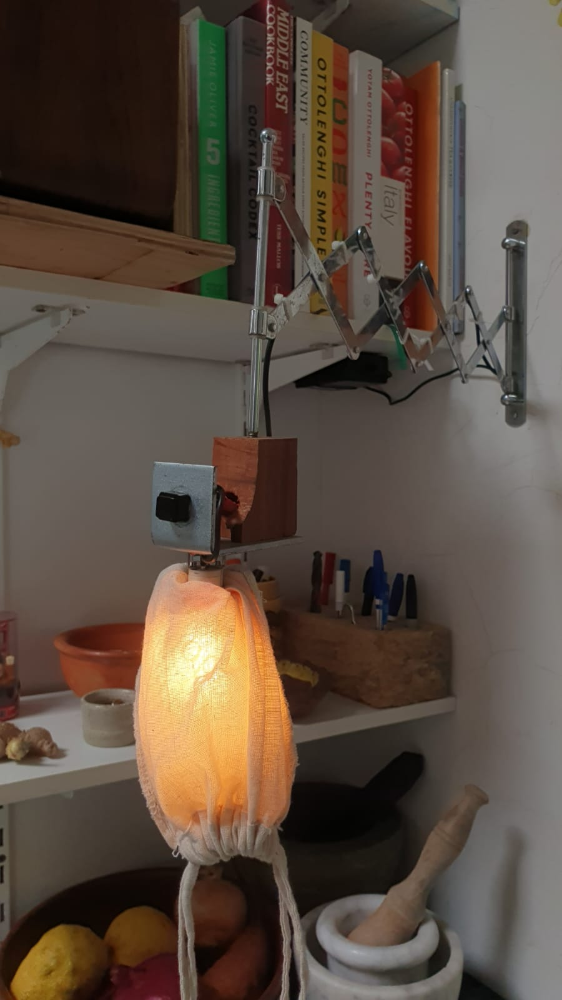
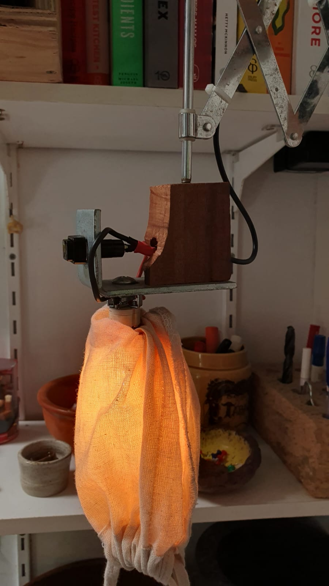
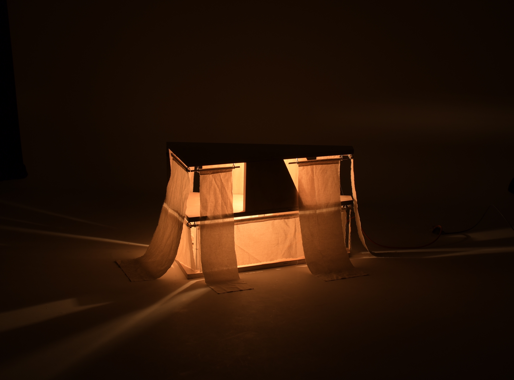
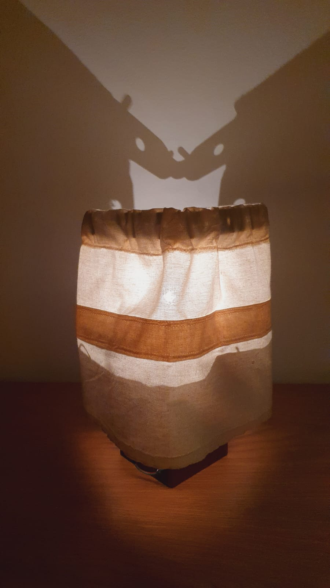
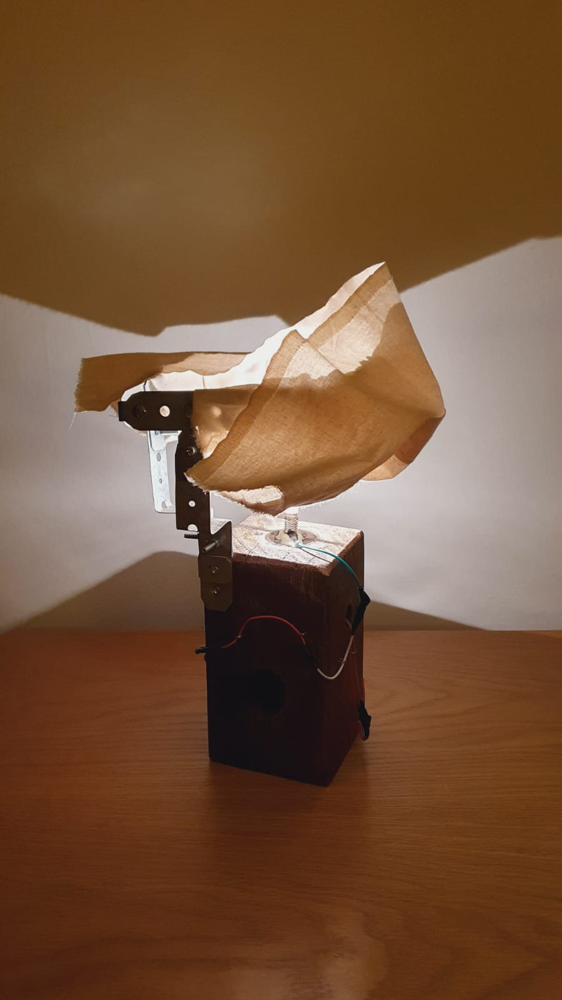

Ceramics


Stoneware, 2024, Shot by Otis Burian Hodge


Stoneware, Gas Fired, 2024
Wind Chimes
Wind Chime, 2024, Stoneware, String
Wind Chime, 2024, Stoneware, String, Swivel
Wind Chime, 2024, Stoneware, String, Brass
Wind Chime, 2024, Stoneware, String, Calico
Wind Chime, 2024, Stoneware, String, Calico
Wood


Becky's Spoon, 2024, Huon Pine

Perry's Ladle, 2024, Walnut


Finger Spoon. 2024, Banksia
Light
Here is a collection of various lamps and furniture items that have had light incorporated into them.



Kitchen Lamp, 2024, Walnut, Hardware, Aesop bag




Doorswing Table, 2024, Marine Ply, calico, hardware
Doorswing Table is a three dimensional work to be viewed in a low light room and
permanently installed in the artists bedroom. The main structure of this work has been cut
out of Marine ply-wood. Its unusual triangular shape has been made to fit flush behind the
open door of the artist’s bedroom.
This work draws attention back to the space through its abstract form, prompting the
audience to consider unused spaces in their own life and how they might be able to bring
beauty to areas that seem to simply take up space. The illuminated aspect of this work
additionally attempts to bring focus and function to this space that is usually devoid of
purpose. In this object, its lightbulbs have been moved to the interior, providing the object
with a secrecy that the audience is not privy to. Additionally, this light is obscured behind
it’s curtains in order to hide the contents of the object. This transforms the object not
simply from a place that should now be looked at and seen, but also to a place that
contains something important and exclusive. All of these features have been implemented
in order to allude to the fact that there is beauty and reverence, especially within the
unseen and often cast aside places of our lives.



Astrid's Lamp, 2023, Hardware, Bed Leg, Calico
General Merchant

[Front] General Merchant Installation at Woodburnia 2025
About Me
Bradley Mendels is an Eora/Sydney Based artist living and working on unceded Gadigal Land.
He studied at UNSW, graduating with a diploma in Arts (Sociology & Anthropology) and Fine Arts (Painting & Sculpture).